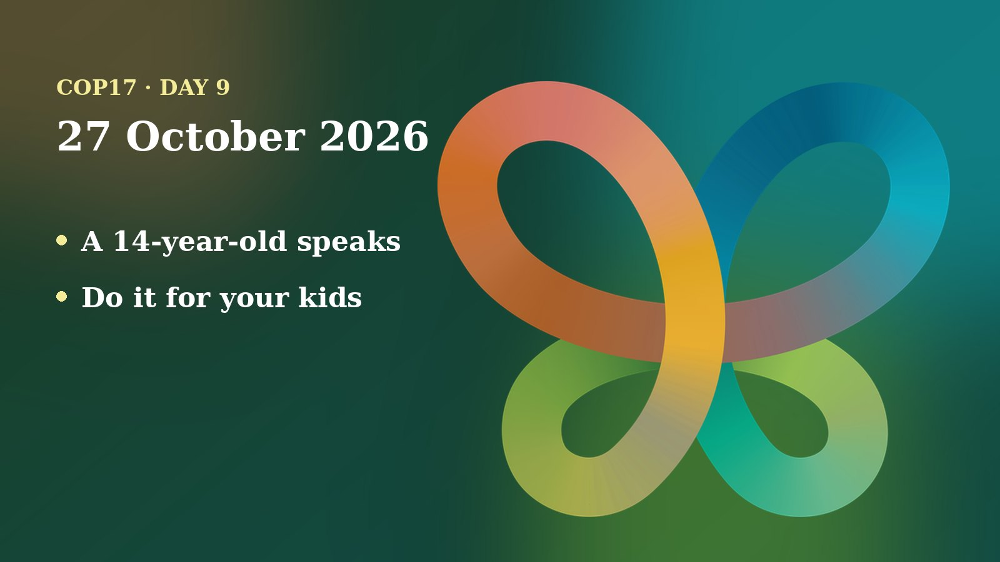

Tuesday was the first day of the high-level segment at COP17. Ministers made pledges and described their plans, and COP17's President asked them to settle what negotiators could not. A 14-year-old from Canada reminded the room who the decisions are for.
The day in negotiations
Two things ran side by side on Tuesday: ministers took the floor in the high-level segment, and Working Group II kept going through draft decisions line by line. My main sources are the UN Transcripts record of the day's sessions. Those transcripts are automatic and unofficial, and names and numbers can be garbled, so I use only figures that look consistent and name who said them. The Earth Negotiations Bulletin issue for the day was not yet online when I checked.
At the high-level segment, COP17 President and Armenia's Environment Minister Hambardzum Matevosyan said the presence of ministers must make a practical difference on issues left open after technical talks, reports Armenpress. He asked ministers and heads of delegation to help narrow differences. Ministerial talks continue on 28 October, and the conference ends on 30 October, according to Horizon Weekly.
The first transcript shows UN Environment Programme chief Inger Andersen saying the world is still off track. CBD Executive Secretary Astrid Schomaker said the world is halfway to 2030 and that nearly 90% of countries now have national targets, but fewer than half of those are judged to be on track.
In Working Group II, small drafting groups reported back on many texts. The wildlife group cleared several paragraphs, and the climate group finished its work on a short working paper. Protected areas, the programme of work and synthetic biology each need at least one more session. Parties agreed to merge two items on the programme of work into one document.
Later, on forests, several paragraphs were agreed, including one on Indigenous peoples and local communities. But the group stayed stuck on language about unilateral trade measures, where Brazil treated the original text as a red line while the EU, Norway and Australia backed alternative wording. Wording on pest control, and on protecting environmental human rights defenders, also stayed in brackets. Brackets are the marks that show disputed text.
Positions and stakeholders
The day opened with a ministerial dialogue on biodiversity finance, convened with the Coalition of Finance Ministers for Climate Action. The Executive Secretary recalled that the global framework calls for at least US$200 billion a year for nature by 2030, and for cutting harmful incentives by at least US$500 billion a year. Armenia's Deputy Finance Minister Edgar Mikrtchan argued that finance ministries should be involved from the start of environmental policy, not only when money is requested.
Countries then set out their positions and pledges:
- Norway announced a large new marine protected area and said it would pledge about US$78 million to the Global Environment Facility (GEF). It also said it would give up to US$3 billion in concessional loans to the Tropical Forest Forever Facility, subject to conditions.
- Germany said it would give €50 million to the Global Biodiversity Fund this year and €20 million for projects that help countries update their national plans. It also mentioned US$100 million for a public-private package for protected areas in Africa.
- Belgium pledged €80 million for the GEF's next funding round. Monaco pledged US$1.5 million to the Biodiversity Fund for 2026-2030, and Luxembourg committed €2 million to UN climate and nature funds.
- Brazil backed the Tropical Forest Forever Facility and asked for direct, predictable money for developing countries and for Indigenous peoples and local communities. It noted that pledges to the GEF were lower this time.
- Colombia asked for positive incentives and a stronger GEF. Nigeria asked for US$20 billion a year for developing countries by 2025 and US$30 billion by 2030.
- The European Commission named four priorities: a strong response to the global review, resource mobilisation, digital sequence information with the Cali Fund, and full participation of Indigenous peoples and local communities.
- The State of Palestine said that access to funding is blocked by political restrictions and that about 87% of farmland in Gaza is out of reach.
On the working-group floor, the EU, Brazil, Russia, Canada, South Africa and others traded edits on farming texts about soil pollution and harmful subsidies. Russia opposed direct reference to subsidies, while the EU wanted the full scope of the framework's subsidy target. Both paragraphs were left bracketed, and the Chair asked for revised versions.
Beyond the negotiating rooms, Armenia presented another presidency flagship initiative, the Yerevan Tech for Biodiversity Monitoring Platform, led by the Food and Agriculture Organization and the International Union for Conservation of Nature. It aims to help countries close data gaps using satellites and artificial intelligence, according to Armenpress. Somalia also signed up to the Global Biodiversity Information Facility, a ceremony listed in the UN Transcripts schedule.
Numbers to know
- US$200 billion a year: the framework's goal for biodiversity money from all sources by 2030 (Astrid Schomaker, CBD).
- US$500 billion a year: the amount of harmful incentives the framework aims to cut by 2030.
- About US$19 billion: Schomaker's estimate of biodiversity finance reached in 2024, close to a US$20 billion milestone for 2025.
- US$34.2 billion: Barbados's estimate of current biodiversity finance, as heard in the transcript of the first segment.
- Nearly 90%: the share of countries with national targets, though fewer than half of those are on track (Schomaker).
Through a child and youth lens
The strongest voice of the day came from the youngest speaker. Robert, 14, from Canada, who works with the Reserva Youth Land Trust and was at his third COP, told the opening of the high-level segment that nature is still in trouble. He asked governments to redirect harmful subsidies into action and ended with the words "Do it for your kids." The President replied that COP17 would do much better. Schomaker later referred back to a 14-year-old delegate calling for harmful incentives to be removed.

A moderator from the World Bank framed jobs as part of the answer, noting that about 1.2 billion children in developing countries will reach working age in the coming years, while far fewer jobs exist. She presented nature-based work as one path. Brazil asked for meaningful participation of women and youth in decisions, and Cambodia asked youth, among others, to help carry out its national plan. Matevosyan closed his own remarks by speaking of a duty to future generations.
In the drafting rooms, youth language was mixed. Text in the forest decision already names women, youth and academia. Guatemala asked to add women and youth to another forest paragraph, but the Chair declined because the group had agreed the text without additions. In the marine group, Tuvalu, Panama and Chile pressed for women and youth to be named among those advising on ecologically significant sea areas, and Russia wanted a small expert group. That item was still open. The transcripts I read do not mention children at all in the working groups.
As a member of the UNICEF Global Delegation, I advocate for including children and youth in the CBD process. That makes the small wording fights matter. A named seat in an advisory group, or a line in a decision, is how young people stay in the room after the headlines move on. Money matters too: the harmful-subsidy debate is a debate about what today's children will inherit. UNICEF Armenia's guide explains how the Global Youth Biodiversity Network (GYBN), the official youth network under the CBD, takes part.
On my calendar today
These are scheduled engagements, taken from my COP17 schedule:
- 12:30-13:30, Green Zone: panel on new climate services for nature conservation and high-resolution climate scenarios for Dilijan National Park, organised by the Swiss Federal Institute for Forest, Snow and Landscape Research (WSL). I am on the panel.
- 13:15-14:30, Blue Zone, GRULAC meeting room: "Youth and Children Harvesting Life: agroecology, green jobs and case studies in biodiversity action", organised by GYBN. I am a speaker.
- 15:00-20:00: I co-host the Armenia Tree Project booth in the Blue Zone. Booth hours do not block my calendar, so I am open to speaking requests.
What to watch tomorrow
- The second day of ministerial talks (28 October): whether ministers clear the brackets left on trade language, subsidies and pest control.
- Unfinished drafting groups: protected areas, synthetic biology, the programme of work and the marine advisory group, all of which asked for more sessions.
- Where youth are named: whether the marine advisory group keeps its references to women and youth.
- More pledges: the Qatar statement and later speakers were cut off in my transcript, so there may be more announcements.
Follow where I am each day on my COP17 schedule, and the daily news in the Newsroom.
Sources
- COP 17 High-Level Segment, 2nd meeting, automatic transcript (UN Transcripts, 27 Oct 2026). https://transcripts.un.org/en/asset/k1z/k1znps5xrj
- COP 17 High-Level Segment, 1st meeting, automatic transcript (UN Transcripts, 27 Oct 2026). https://transcripts.un.org/en/asset/k1t/k1tab6bxlz
- COP 17 Working Group II, 8th meeting, automatic transcript (UN Transcripts, 27 Oct 2026). https://transcripts.un.org/en/asset/k1d/k1dqn7fet0
- COP 17 Working Group II, 9th meeting, automatic transcript (UN Transcripts, 27 Oct 2026). https://transcripts.un.org/en/asset/k1s/k1sxwwrc6d
- Minister: COP17 must translate global biodiversity goals into national policies and practical measures (Armenpress, 27 Oct 2026). https://armenpress.am/en/article/1263958
- Armenia presents new COP17 presidency flagship initiative (Armenpress, 27 Oct 2026). https://armenpress.am/en/article/1263929
- COP17 High-Level Talks in Yerevan Focus on Biodiversity Financing and Concrete Action (Horizon Weekly, 27 Oct 2026). https://horizonweekly.ca/en/cop17-high-level-talks-in-yerevan-focus-on-biodiversity-financing-and-concrete-action/
- What adolescents and young people should know about COP17 (UNICEF Armenia, 2026). https://www.unicef.org/armenia/en/stories/what-adolescents-and-young-people-should-know-about-cop17